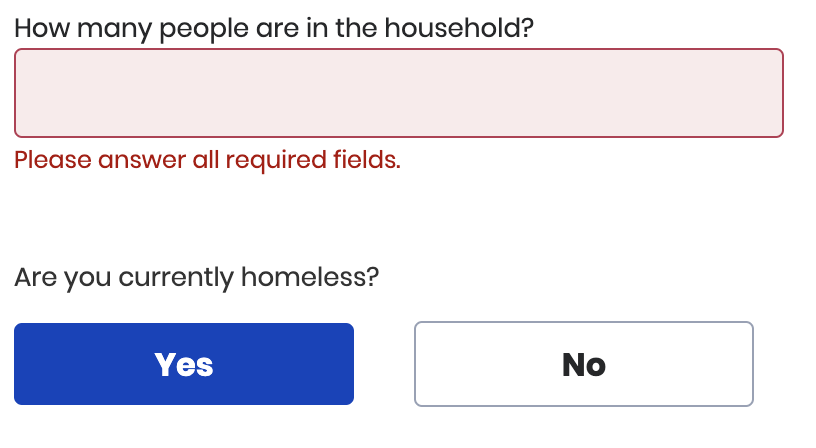

Example 1
Form Elements
Using Atoms such buttons, text, input fields, and radio buttons various form elements are created such as is text input field or the Yes/No question. There are various other form fields like multi-select checkboxes or nested radio inputs that are formed using these atoms.